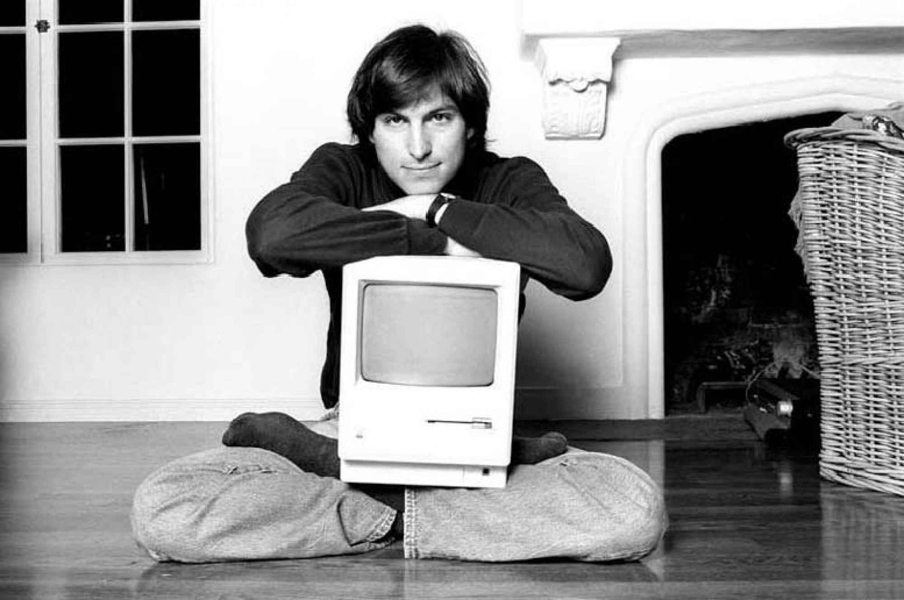
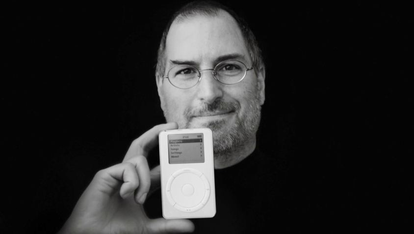
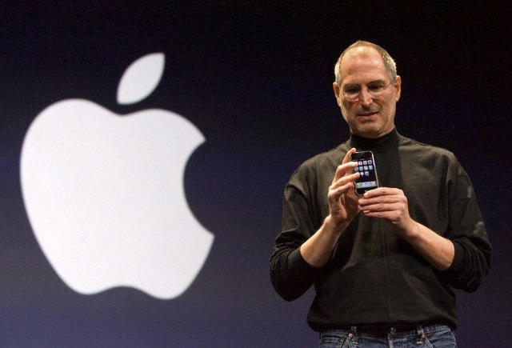

Steve Jobs was a leader in the tech industry for over 30 years. He was a true visionary. Nearly anythinh he touches turns to gold. He revolutionized personal computers, the music industry, cell phones, tablets, and 3D animation. Without Steve Jobs the world would be a verry different place. One without many of my favorite things, and perhaps without my current career path.
Steven Paul Jobs (February 24, 1955 – October 5, 2011) was an American businessman. He was best known as the co-founder, chairman, and chief executive officer (CEO) of Apple Inc.; CEO and largest shareholder of Pixar Animation Studios; a member of The Walt Disney Company's board of directors following its acquisition of Pixar; and founder, chairman, and CEO of NeXT Inc.  Jobs is widely recognized as a pioneer of the microcomputer revolution of the 1970s, along with Apple co-founder Steve Wozniak. Shortly after his death, Jobs's official biographer, Walter Isaacson, described him as the "creative entrepreneur whose passion for perfection and ferocious drive revolutionized six industries: personal computers, animated movies, music, phones, tablet computing, and digital publishing." Adopted at birth in San Francisco, and raised in the San Francisco Bay Area during the 1960s, Jobs's countercultural lifestyle was a product of his time. As a senior at Homestead High School, in Cupertino, California, his two closest friends were the older engineering student (and Homestead High alumnus) Wozniak and his countercultural girlfriend, the artistically inclined Homestead High junior Chrisann Brennan. Jobs briefly attended Reed College in 1972 before dropping out, deciding to travel through India in 1974 and study Buddhism. Jobs co-founded Apple in 1976 to sell Wozniak's Apple I personal computer. The duo gained fame and wealth a year later for the Apple II, one of the first highly successful mass-produced personal computers. In 1979, after a tour of Xerox PARC, Jobs saw the commercial potential of the Xerox Alto, which was mouse-driven and had a graphical user interface (GUI). This led to development of the failed Apple Lisa in 1983, followed by the successful Macintosh in 1984. In addition to being the first mass-produced computer with a GUI, the Macintosh instigated the sudden rise of the desktop publishing industry in 1985 with the addition of the Apple LaserWriter, the first laser printer to feature vector graphics. Following a long power struggle, Jobs was forced out of Apple in 1985. After leaving Apple, Jobs took a few of its members with him to found NeXT, a computer platform development company specializing in state-of-the-art computers for higher-education and business markets. In addition, Jobs helped to initiate the development of the visual effects industry when he funded the spinout of the computer graphics division of George Lucas's company Lucasfilm in 1986. The new company, Pixar, would eventually produce the first fully computer-animated film, Toy Story—an event made possible in part due to Jobs's financial support. In 1997, Apple purchased NeXT, allowing Jobs to become the former's CEO once again. He would return the company, which was on the verge of bankruptcy, back to profitability. Beginning in 1997 with the "Think different" advertising campaign, Jobs worked closely with designer Jonathan Ive to develop a line of products that would have larger cultural ramifications: the iMac, iTunes, Apple Stores, the iPod, the iTunes Store, the iPhone, the App Store, and the iPad. Mac OS was also revamped into Mac OS X, based on NeXT's NeXTSTEP platform. Jobs was diagnosed with a pancreatic neuroendocrine tumor in 2003 and died of respiratory arrest related to the tumor on October 5, 2011.